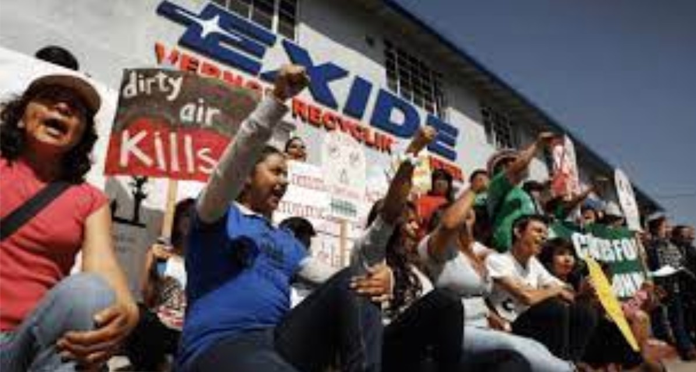

Photo Courtesy: Communities for a Better Environment
Hazardous waste continues to be a major issue for communities several decades after the start of the EJ movement. Hazardous waste facilities are regulated sites that are allowed to produce, treat, store, and dispose hazardous waste. In addition to the over 100 permitted sites throughout California, there are also hundreds of sites throughout the State that are undergoing cleanup, investigation, or enforcement for known or suspected contamination issues. These sites expose communities to a variety of chemicals that can increase the likelihood of cancer, respiratory diseases, neurological, reproductive, and developmental problems.
The map below shows the precent of Black, Indigenous, people of color (BIPOC) compared to the percent of White people by census tract with the hazardous waste sites as identified by EnviroStor in the State.
i. Map of race and facilities
This map shows a pattern of more hazardous waste sites located in census tracts with higher percentages of BIPOC.
Environmental racism describes how Black, Indigenous, and communities of color (BIPOC) are disproportionately exposed to toxic and hazardous waste based on race. Environmental racism calls out the barriers, laws, regulations, and policies our government uses to allow the placement of and the unequal protection the government provides to BIPOC communities from the dangers of hazardous waste facilities.
To the left is a map of the percentage of BIPOC people and density of hazardous waste sites located around the City of Vernon. The picture to the right is a snapshot of the same region showing its CalEnviroScreen 4.0 scores. CalEnviroScreen scores are calculated comparatively based on the pollution burden and population characteristics of census tracts throughout the State.
ii. Heat Map of hazardous waste site density and race zoomed in on the City of Vernon
iii. side comparison with CalEnviroScreen map
![][1]![][2]
Although the City of Vernon has a low population to obtain an CalEnviroScreen 4.0 score, the surrounding census tracts have high CalEnviroScreen scores, which is in part due to the high pollution burden. The map on the left shows the high population of BIPOC around Vernon also live with higher densities of hazardous waste sites when compared to census tracts with lower population of BIPOC.
a. Why are schools' proximity to hazardous waste sites concerning?
School-age children spend a significant amount number of hours in schools. In 2021, nearly 50.7 million school-aged children spend at least six hours in schools across the country. Many of these schools are located in close proximity to or at time, built on top of, hazardous waste sites. As a result, the school locations are considered a key determinant of exposure to toxic pollutants.
Environmental justice studies have found race and class inequities in the distribution of schoolchildren and schools near environmental hazards. In Los Angeles, minority students in LAUSD are more likely than their white counterparts to attend schools that are close to hazardous waste facilities. Latinos are more likely to attend schools near hazardous facilities and face higher health risks associated with toxic air emissions.
A study based in Boston found that schools with disproportionately higher percentages of minority and economically disadvantaged schoolchildren are more likely to be located within a 1 mile radius Toxic Release Inventory (TRI) sites. The study also found a correlation between schools near TRI sites and low academic performance at the school level, as measured by English language art, math, and science Composite Performance Index scores.
The map below shows the hazardous waste sites within a ¼ mile radius of all public, charter, and private schools in the State.
i. Map of ¼ radius of hazardous waste sites to schools
Los Angeles County has a high concentration of public, charter, and private schools within a 1/4 mile radius of hazardous waste sites. When selecting the layers for charter schools and hazardous waste sites, you can also see a high concentration of charter schools in Los Angeles within a 1/4 mile radius of hazardous waste sites.
- Advancing solutions from multiple angles.
Policy solutions: There have been two bills in previous legislative sessions that have tried to fix this gap in regulation: Assembly Bill 762 (Lee, 2021) and AB 2214 (Garcia, 2022). Both of these bills died in the suspense file in the Senate Appropriations Committee, in part due to the strong opposition from charter school lobbying.
Although Cudahy Alliance for Justice successfully prevented the construction of a charter school, communities should not be forced to find an attorney and litigate a case every time a charter or private school is proposed on a former hazardous waste site. It is more likely that more of these situations will happen in environmental justice communities, where low-income working-class people are unable to stay abreast of new school projects in their neighborhood and unable to obtain an attorney to challenge projects. Legislative change is possible, and needed, in order to protect communities across the State.
Land use planning: Decades of racist land use planning and practices such as redlining resulted in low-income communities and communities of color living with an overconcentration of industrial activity. Along with the siting of hazardous waste facilities near homes, environmental justice communities also live closer to more cleanup sites. State agencies, like the Department of Toxic Substances Control, to implement regulations that consider the cumulative impacts in a community when new permit applications for hazardous waste facilities are considered. Although Senate Bill 673 was signed into law in 2015, DTSC has not yet finalized the regulatory process that would add permit criteria to new facilities and establish setbacks to protect sensitive receptors from facilities.
Affordable, safe housing and other community-centered solutions: Schools are not the only sensitive receptors being sited near or on contaminated sites. Over the past decade, California's housing crisis has also solidified connections between the need to locate affordable housing away from toxic or polluted land. Land use planners and decisionmakers should require every new housing project to undergo robust environmental review to avoid placing housing on or near contaminated land before adequate cleanup is complete.
Addressing housing quality issues also requires community-led and community-centered land use planning, so that those most impacted can provide the solutions to improve their qualities of life including investment to critical infrastructure such as clean drinking water and sanitation systems, climate resilient homes, access to green spaces, and robust anti-displacement and anti-gentrification policies.
[A group of people holding signs Description automatically generated with medium confidence]: media/image1.jpg {width="4.454545056867891in" height="2.409834864391951in"}
[1]: media/image2.png {width="1.4415583989501313in" height="1.9512806211723535in"}
[2]: media/image3.png {width="4.40625in" height="2.6770833333333335in"}